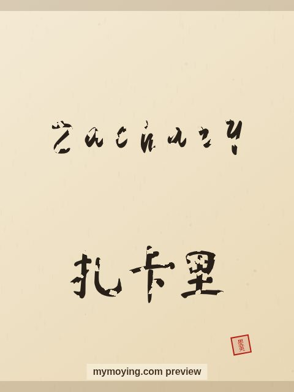

Zachary in Chinese Calligraphy
Curious how Zachary looks in Chinese brush calligraphy? This page shows the name, its Chinese transliteration 扎卡里 (Zhā kǎ lǐ), and the story behind it.

Sample. “Zachary” in the Regular (楷书) brush style with the Chinese name 扎卡里 (Zhā kǎ lǐ). The paid file removes the watermark.
The Chinese characters for Zachary
As a transliteration, Zachary is usually written 扎卡里 (Zhā kǎ lǐ). Each character is listed below with its own dictionary meaning — the name is chosen by sound, not by meaning, and Moying does not translate names. Please have a person review the characters before any permanent use such as a tattoo.
Origin and meaning
With Hebrew origins, Zachary is usually read as “God has remembered”.
About the name Zachary
In the Bible, Zechariah was the father of John the Baptist.
As a gift or a tattoo
Because it means “God has remembered”, a Zachary calligraphy print makes a thoughtful gift for someone who loves the name or its meaning.
Open Zachary in the generatorFree watermarked preview. $1.99 once for a clean high-resolution download of this name in every style and setting. No subscription. Digital product, delivered instantly; see Terms.